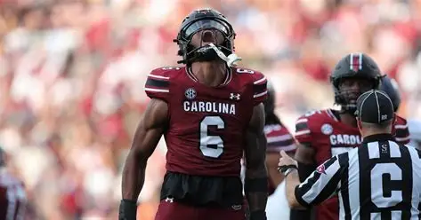
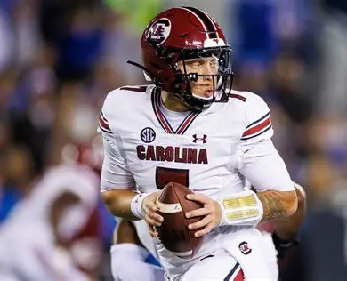
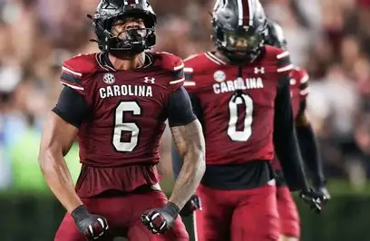
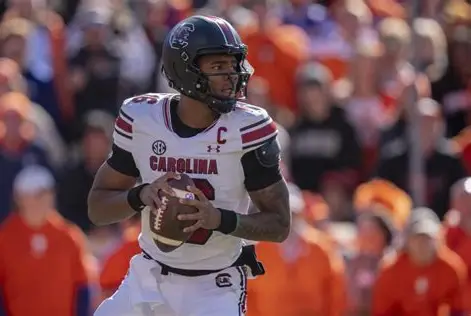
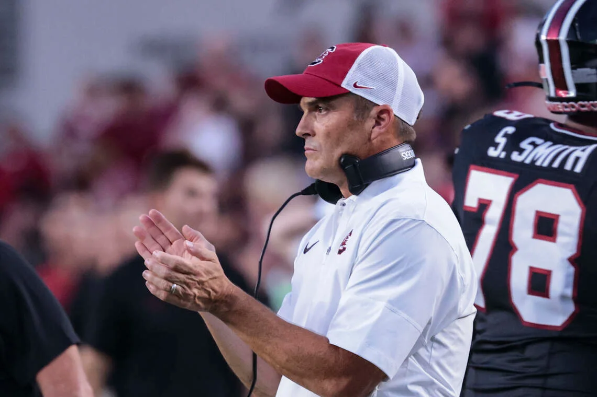
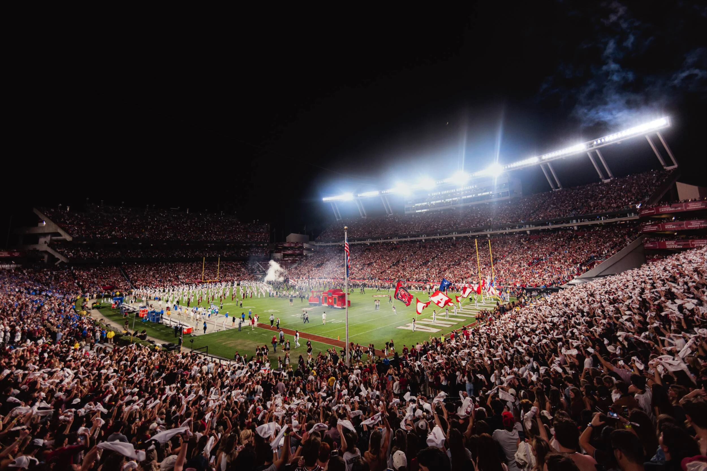

Gamecock
Game Day Guide
Tickets→
Gamecock
Game Day Guide
Tickets→

Team At A Glance
A balanced roster built around leadership, depth, and game-day energy.

GameCock SuperStars
The leaders and playmakers driving South Carolina football today.

Dylan Stewart
All-SEC Edge Rusher
The 2026 preseason All-American has recorded 22.5 tackles for loss and 11 sacks in his first 24 Gamecock games.

Lenorris Sellers
All-SEC Quarter Back
The Gamecock quarterback leads the offense with his athleticism, strong arm, and ability to make plays.

Shane Beamer
Head Coach
In his sixth season leading Carolina, Beamer has 33 wins and continues to build the Gamecock football program.
GAMECOCK FOOTBALL
Ready For Saturday
Meet the players, follow the season, and experience the energy that makes every Gamecock game day unforgettable.
View Full Roster ->